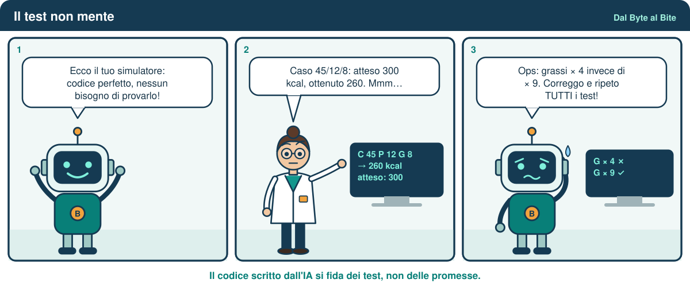

Dal prompt all'app
Lezione 2 · 15 dicembre 2026 · 14:00–18:00
Costruire con l'IA un simulatore per l'educazione alla salute, e dimostrare con i test che funziona.
Dal problema didattico al prototipo validato
Il metodo della lezione 1, in un'immagine

Il flusso di oggi

Dal piatto alla pista: i MET

La risposta alla domanda della palestra

Che cosa deve poter esplorare
lo studente su un tema di salute?
Esempio: come cambia l'energia di una porzione al variare dei macronutrienti, e perché l'etichetta conta anche fibre e polioli.
Prima i requisiti, poi il codice. Un simulatore senza domanda didattica è solo un giocattolo.
Una specifica in una pagina
| Voce | Esempio per FoodLab |
|---|---|
| Input | C, P, G in grammi (0–100); opzionale: fibre, polioli |
| Formula | E = 4C + 4P + 9G (kcal); modalità UE con allegato XIV |
| Unità | g in ingresso; kcal e kJ in uscita, sempre esplicite |
| Output | Energia, % su 2000 kcal, ripartizione a barre |
| Comandi | Reset, uso da tastiera, schermo piccolo |
| Limiti | Cosa il modello trascura; nessuna indicazione individuale |
Un buon prompt per generare codice
Cinque consigli per non perdersi
- Salvate il codice come file .html e apritelo nel browser.
- Una modifica per volta: chiedete un miglioramento, provate, poi il successivo.
- Tenete le versioni (v1, v2, v3…) e annotate che cosa cambia.
- Chiedete all'IA di spiegare le righe del calcolo.
- Se qualcosa si rompe, incollate l'errore e tornate all'ultima versione funzionante.
Regola dei 60 minuti
Se alle 15:50 il prototipo non funziona, si passa al FoodLab dimostrativo: test e progettazione didattica non si saltano.
Pausa · 10 minuti
Al rientro: la prova dei test.
La matrice dei test
| Modello | C | P | G | Fibre | Polioli | Atteso |
|---|---|---|---|---|---|---|
| 4–4–9 | 0 | 0 | 0 | 0 | 0 | 0 kcal |
| 4–4–9 | 10 | 0 | 0 | 0 | 0 | 40 kcal |
| 4–4–9 | 0 | 0 | 10 | 0 | 0 | 90 kcal |
| 4–4–9 | 45 | 12 | 8 | 0 | 0 | 300 kcal |
| UE | 45 | 12 | 8 | 6 | 0 | 312 kcal / 1313 kJ |
| UE | 66 | 11 | 12 | 8 | 0 | 432 kcal / 1817 kJ |
| UE | 18 | 30 | 15 | 10 | 20 | 395 kcal / 1651 kJ |
Perché i test sono obbligatori

300 kcal sono 1255 kJ o 1265 kJ?
Per le etichette vale la seconda: l'allegato XIV fornisce coefficienti propri in kJ.
Test da aggiungere
Il simulatore calcola i kJ con 17, 17, 37 o converte semplicemente le kcal? Il prompt 5 lo chiede esplicitamente.
Checklist di verifica del codice
- Accuratezza del calcolo
- Gestione dei valori zero
- Unità di misura esplicite
- kJ con coefficienti in kJ
- Uso da tastiera
- Leggibilità su smartphone
- Coerenza scientifica
- Nessuna indicazione sanitaria individuale
Dopo ogni modifica si ripetono tutti i test e si annota che cosa è cambiato.
Prevedi · Osserva · Spiega
Aggancio alla salute: lettura consapevole delle etichette con valori di popolazione (linee guida CREA, LARN). Nessun calcolo di fabbisogni personali.
Autovalutazione e rubrica
13 quesiti
Nella sezione «Verifica» della pagina. Suggerimenti senza soluzioni. Obiettivo: almeno il 70%.
| Criterio (0–2) |
|---|
| Correttezza scientifica |
| Tracciabilità |
| Verifica dei risultati |
| Utilizzabilità didattica |
| Uso responsabile per la salute |
Che cosa porto in classe
- Simulatore HTML validato
- Matrice dei test compilata
- Microattività prevedi-osserva-spiega
- Il ciclo della verifica, per ogni uso dell'IA
Grazie! Esportate gli elaborati e caricateli nella cartella di consegna.